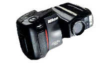
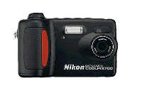
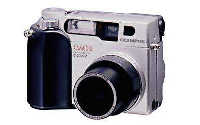
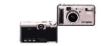

|
|
| 当前位置：电脑报电子版 > 1999 年 > 34 期 > OA专刊 > 两百万像素数码相机全接触 |
| 《 两百万像素数码相机全接触 》 |
| 有人曾预言，1999年是数码相机年，情况果真如此。1999年是数码相机飞速发展的一年，在这一年里，数码相机从100万像素级的产品一跃到了200万像素，而且产品之齐全，叫人瞠目结舌。奥林巴斯（OLYMPUS)、爱普生（EPSON）、索尼(SONY)、富士(FUJI)、尼康(NIKON)、理光(RICOH)、柯达（KODAK）、东芝、三洋和柯尼卡等公司相继推出了自己的200万像素级的民用产品，且售价之低着实叫人不敢相信。在200万像素这个档次上，目前数码相机的这个售价应该说是一个比较公道的价格，也是能被广大消费者接受的价位。现笔者就市场上见到的几款具有代表性的相机向广大读者作一简单的介绍，因为目前这些数码相机主要是针对家用和一般的商业用途，故这部分相机基本上都具备了常用的功能，如自动对焦、自动曝光、定时自拍、内置闪光灯(自动闪光、强制闪光、关闭闪光灯、防红眼等)、液晶显示屏、视频输出、自动白平衡等。 尼康(NIKON)COOLPIX950 尼康是著名的135相机生产厂家，与佳能公司并驾齐驱，代表目前135相机技术的最高制造水平。尼康相机素以结实耐用、曝光精确、镜头分辨率高且反差锐利而著称。尼康一开始对数码相机的生产抱非常谨慎的态度，直到百万像素级的相机普遍上市后才推出了由自己独立制造的数码相机。但尼康在200万像素级数码相机的开发制造上走到了同行的前列，显得非常积极，目前它一下子就上市了两款211万像素级的数码相机。尼康COOLPIX950（如图1）相机采用了211万像素的1/2英寸的CCD(分辨率可达1600×1200dpi)，配置了尼康专门为之设计的高性能7mm～21mm焦距(相当于135相机的38mm～115mm)光圈为2.6的变焦镜头，并有1.25×、1.6×、2×和2.5×的数码变焦功能。它采用了尼康先进的相位检测自动对焦系统，对焦点达到4746级，同时设计了连续对焦、单次对焦和手动对焦，但连续对焦时要求使用相机的液晶显示屏，手动对焦距离为10厘米到无穷远，镜头的常规自动对焦最近距离为30厘米，微距摄影时最近可达到2厘米，尼康的这款相机的镜头可任意旋转角度进行拍摄。该相机的光学取景器的取景范围为85％，2英寸13万像素的液晶显示屏的取景范围为92％，显示屏设置了30秒自动断电装置。尼康COOLPIX950相机采用纯黑色的合金材料制作，非常精美漂亮，重350克 。相机的测光系统采用了矩阵测光、点测光和加权平均测光等三种测光方式，这都是尼康测光技术中比较精华的技术。相机的曝光系统也颇具特色，设有程序自动、光圈优先自动曝光和快门优先自动曝光，同时你还可能根据自己的使用习惯编制自己的拍摄方法，并将它存储在相机中，可见尼康技术人员的良苦用心。相机在具有自动白平衡功能的同时，内置了5种手动白平衡设置，分别为晴天阳光下设置、多云设置、白炽灯设置、日光灯设置和闪光灯设置。它还配备了外置闪光灯，通过一个专用的外接支架可连接尼康公司几乎所有的闪光灯，其中包括目前最先进的SB－26和SB—28。 尼康COOLPIX950相机随机配置的是8MB CompactFlash存储卡，采用三种不同的JPEG压缩格式，每种格式又可以1/4、1/8和1/16的压缩比进行压缩。经最高质量的压缩后，一张照片的容量大约在900K左右。尼康的这架相机提供了在最高分辨率情况下连续拍摄10张照片的功能，同时在最高分辨率的情况下，每秒可拍摄1.5张。相机采用了尼康的高速传输串口，在视窗平台下每秒可传输115KB数据，比一般的串口要快一点，但比USB接口还是慢很多，这是一个不足之处。 尼康的另一款211万像素的相机型号为COOLPIX700(如图2)，它的大部分功能与COOLPIX950基本一样，只是采用了35mm/F2.6焦距并有2.3倍数码变焦功能的定焦镜头，取消了外接闪光灯功能。 奥林巴斯(OLYMPUS)C—2000Z 奥林巴斯是目前数码相机生产厂家中最成功的厂家之一，该厂生产的奥林巴斯C－1400L是全球上市最早的一款超百万像素的数码相机，为该公司赢得了很多荣誉。但出人意料的是，奥林巴斯的这款200万像素相机没有继承C－1000系列的单反机型设计，而改用了旁轴取景相机的设计。奥林巴斯C—2000Z（如图3）相机采用了211万像素1/2英寸的CCD(1600×1200dpi)，实际图像像素为200万，配置了非球面高清晰度的3倍光学变焦和1.25x、1.6x、2.5x的数字变焦功能的高质量镜头，镜头的对焦范围为微距时20厘米～80厘米，常规拍摄时为80厘米到无穷远，机身采用镁合金材料精心制作而成，重350克（不含电池和存储卡）。奥林巴斯对这款新相机的曝光系统、测光系统、感光度和对焦系统进行了改进，这款新相机具有自动曝光程序、光圈优先和快门优先自动曝光功能，将上一代相机中的平均测光改为加权平均测光并增加了点测光功能，为更好地控制相机的曝光、提高照片的质量提供了保障。同时对上一代相机中的全自动快门和对焦系统进行了改进，增加了手动对焦和手动快门，避免了像上一代相机那样，在低光照和低反差等自动对焦困难的场合按不下快门。该机提供了100ISO、200ISO和400ISO等三种可选感光度，方便了低照度场合的拍摄需要。相机的快门速度为1/2～1/1000秒，在拍摄高速运动物体方面占有一定的优势，当然除了拍摄高速行驶的汽车外，数码相机的快门速度足可以满足任何场合的需要。白平衡仍保留了C—1400L的设计，在提供自动白平衡功能的情况下，预置了日光灯、晴天、阴天和白炽灯四种手动设置。提供无压缩、1600×1200dpiSHQ、1600×1200dpiHQ和1024×768dpi或640×480dpiSQ四种存储方式。 C—2000Z相机随机提供的是一张8MB SmartMedia存储卡，使用4节5号电池，随机提供了4节可反复充电的镍氢电池和一个制作精美的快速充电器。这架相机可以直接连接该厂生产的P－300和P－330数码打印机进行照片的打印，也可以直接将存储卡插入到P－330数码打印机上进行1、2、4、9、16幅面照片的打印。奥林巴斯的这架相机没有录音功能，但与尼康相机一样具有外接闪光灯功能，令人遗憾的同样是在传输接口上，该机与上一代数码相机一样采用了传输速度较慢的串口。传输速度叫人不敢恭维，在最高分辨率下拍摄的照片每张的传输时间要1分多钟，直等得人心烦气躁。 理光(RICOH)RDC—5000 理光公司也是生产数码相机比较早的厂家之一，在百万级像素的数码相机生产中，理光公司的系列产品以其质优价廉的特点在国际市场上占有一席之地。理光公司这次推出的RDC—5000数码相机（如图4）是目前家用级相机中像素最高的相机之一，它的CCD分辨率达到了230万像素（1792×1200 dpi）。该相机采用了2.3倍光学变焦2.5倍数码变焦镜头，相当于传统135相机的38mm～86mm镜头。尽管这架相机不像富士和索尼那样采用定焦镜头，但理光公司还是把这架230万像素的相机做得非常小巧玲珑。为了尽可能地发挥CCD的潜在能力，使拍摄后的照片最大限度地达到清晰真实，理光将这架相机的镜头进行了改进，将相机的前镜片改为光学非球面玻璃镜片，大大改进了镜头的成像质量。但令人遗憾的是，该相机的最近拍摄距离只能达到40厘米，显得“远”了一点，没有太大的实用价值。该相机具有自动和手动白平衡功能，还具有手动对焦功能，这在数码相机中是很少见的设计；相机具有＋2至－2EV以0.5级间隔的曝光补偿功能，相机内置了2MB的缓存，以便用于相机的连续拍摄，使得相机在最高分辨率的情况下连拍速度可达到10张，这是一个非常实用的设计。相机内置的8MB存储卡在最小压缩格式的情况下能存储9张照片。该相机采用了内置固定卡与可插拔卡相结合的设计思路，如果你想拍摄更多的照片，你可以为相机配置外置的可插拔卡(SmartMedia)，目前插拔卡最大支持32MB 。 理光公司在这个产品上别出心裁地设计了高质量黑白拍摄模式后，又设计了一项二色拍摄功能，利用这个功能，你就能轻易地将这个五彩缤纷的世界转换成一种令人怀念的“古董色”世界。不能不提的是，该相机采用新型的USB接口进行照片数据的传输，在理论上这种接口的传输速度比串口高出10倍。这是一个不小的差距，采用串口传输的相机将会大大削减你使用数码相机的乐趣。理光的这架相机随机捆绑的软件除了数据传输用的ArcSoft PhotoBase 外，还提供了一个实用的PhotoStudio 3.0，用这个软件你就能对拍摄后的照片进行各种处理，并可以将照片编辑成电子相册并配上自己喜欢的音乐在电脑中进行欣赏。 (浙江 叶林明) |
| 下载本期推荐软件 | 页 首 |
| 《电脑报》版权所有，电脑报网站编辑部设计制作发布 |